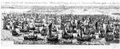

Ectypoma classis bis mille octingentarum navium ductore illustrissimo principe Mauritio Nassovio in Flandriam appulsae, XXII Junii MVIc. Henricus Vroom inven. 2 bladen, kopergravure, 380 x 965 mm. [Amsterdam,] Cornelis Claes zoon excud., [1600.] -- (COLLBN Port 38 N 85)
Bij het aanschouwen van de prenten die het doen en laten van veldheer Maurits en zijn broer Willem Lodewijk toelichten, zou men haast vergeten dat er naast de spectaculaire en in het oog lopende oorlogsverrichtingen ook op grote schaal diplomatieke activiteiten aan de gang waren. De veldtocht door Vlaanderen, die op 1 juli 1600, door de slag bij Nieuwpoort, in krijgskundig opzicht zo gunstig afliep, had mede ten doel de Vlaamse steden te winnen voor het in lange besprekingen door de Noordelijke gewesten uitgedragen standpunt dat het beter zou zijn als zij, de Zuidelijken, zich óók metterdaad van Spanje afkeerden. Uiteindelijk bleken de katholieke gewesten in het Zuiden daarvoor toch niet warm te kunnen lopen. Ook de activiteiten van Maurits en zijn leger konden hen niet zover krijgen: zo bezien was zijn veldtocht door Vlaanderen een nutteloze onderneming gebleken. Desalniettemin werd er in het Noorden alle aandacht aan besteed.
Om zijn leger over te brengen en, ten slotte, een behouden terugtocht te waarborgen, had Maurits een vloot van achtentwintighonderd(!) schepen en scheepjes op de Westerschelde bijeen laten komen. Het is Hendrick Vroom, die zich vooral als schilder van zeestukken heeft gemanifesteerd, bijzonder goed gelukt om deze uitzonderlijke zeemacht aan ons voor te stellen. Heel ingehouden geeft hij aan waarom het eigenlijk gaat: vooraan links wordt vanaf twee schepen een saluutschot gelost ter ere van de aanvoerder, die we kunnen onderscheiden op het bewimpelde schip met de gestreken zeilen links. Maar voor het overige richtte de graveur duidelijk al zijn aandacht op de gigantische, tegen de horizon vervagende, vloot.
Daarbij moeten wij ons, net als de mensen toen, afvragen hoe men het voor elkaar kreeg om zo’n enorme hoeveelheid schepen zich als vloot te laten gedragen. Het lukte en, neen, er heerste geen wanorde. Dat is het wat Vroom ons via zijn prent laat weten.
Literatuur
- F. Muller, De Nederlandsche geschiedenis in platen. Beredeneerde beschrijving van Nederlandsche historieplaten, zinneprenten en historische kaarten. Amsterdam 1863-1882. 4 dln, I, vergelijk nr. 1132a.
- G. van Rijn, Atlas Van Stolk. Katalogus der historie-, spot- en zinneprenten betrekkelijk de geschiedenis van Nederland, verzameld door A. van Stolk Cz. Amsterdam 1895-1933. 10 dln, II, vergelijk nr. 1081.
- G.S. Keyes, Cornelis Vroom: marine and landscape artist. Utrecht 1975, p. 24-25.
| vorige pagina | top pagina |